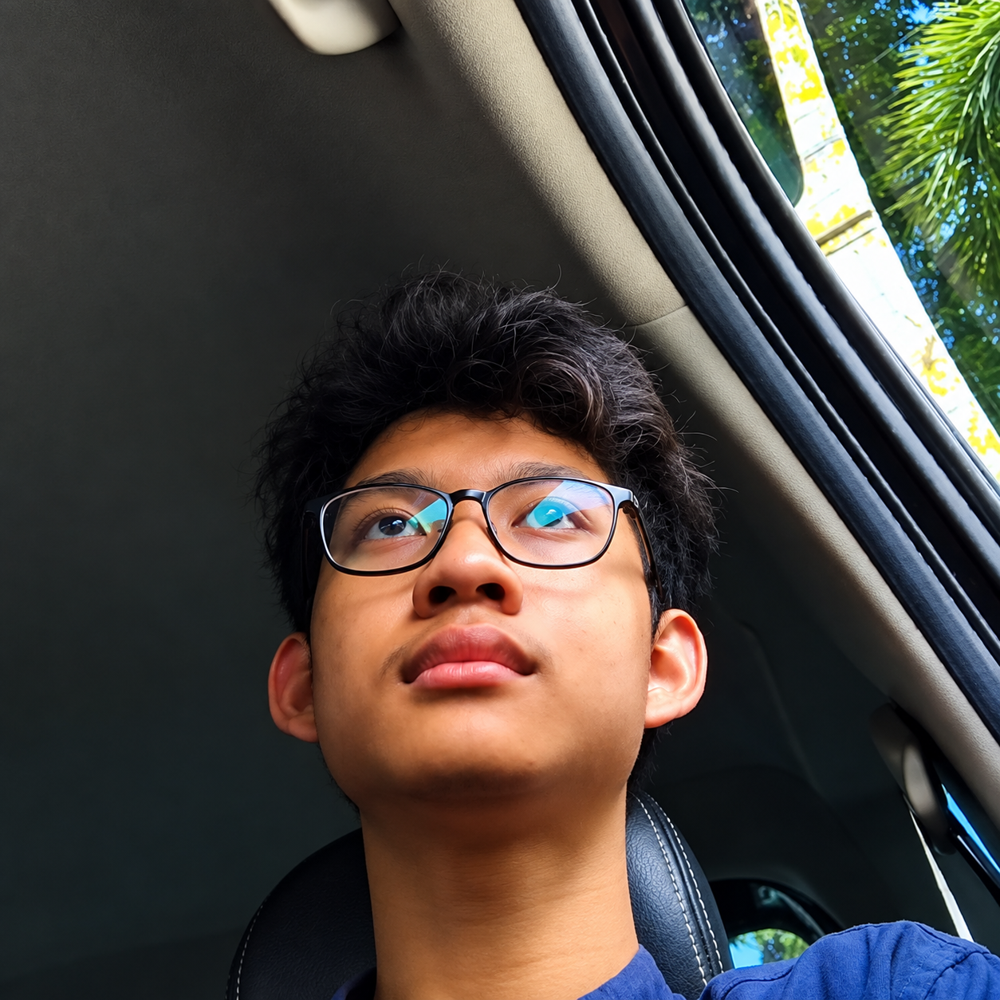

IT Support Intern
Completed a six-month internship at Universitas Padjadjaran, providing technical support and assisting with information systems.
|
 |
A third-year Informatics student at the Bandung National Institute of Technology. I have a strong interest in the development and adaptation of technology. This interest encourages me to continuously learn how new technologies work and understand their impact on everyday life and the industrial world. Currently, I am exploring various innovations in Web3, blockchain, artificial intelligence (AI), and financial technology (fintech). I am interested in understanding how these technologies can be used to build systems that are secure, efficient, transparent, and accessible to society. In addition to developing my technical skills, I am also working to improve my communication, leadership, and teamwork abilities through various work experiences, organizations, and projects I have participated in. In the future, I hope to continue learning and contribute to creating innovative and beneficial digital solutions. |
Completed a six-month internship at Universitas Padjadjaran, providing technical support and assisting with information systems.
Managed lobster farming operations, including cultivation, maintenance, and day-to-day business activities.
Led a team for one year on a crypto project by coordinating community members and managing team compensation.
Have a project or idea in mind? Feel free to reach out.